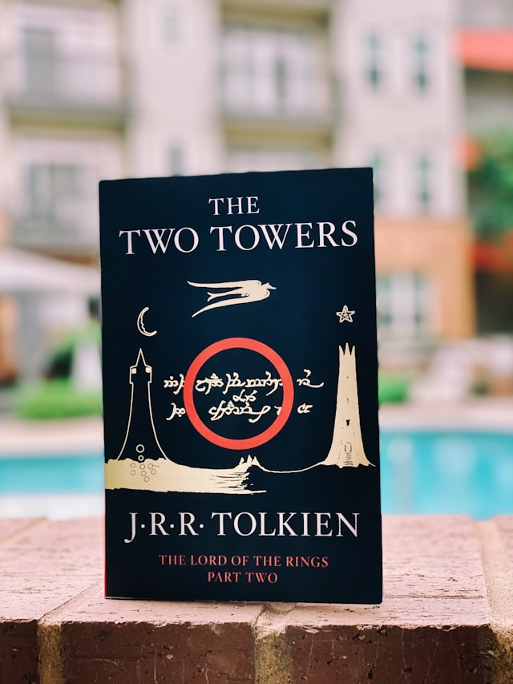

J.R.R Tolkien

John Ronald Reuel Tolkien var en brittisk Författare mest känd som författare till fantasyromanerna The lord of the rings
John Ronald Reuel Tolkien var en brittisk Författare mest känd som författare till fantasyromanerna The lord of the rings
Franz Kafka var en tjeckisk-österrikisk författare av judisk börd. Till största del publicerades Kafkas verk först efter hans död.
Eric Arthur Blair, mer känd genom författarnamnet George Orwell. Var en brittisk författare och journalist. Hans verk kännetecknas av ett skarpt intellekt och en genialisk kvickhet